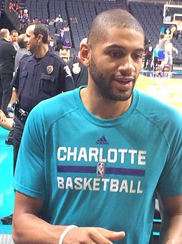

Nicolas Batum

Fiche d’identité
Nationalité : France
Naissance : 14 décembre 1988 (28 ans) Lisieux, Calvados
Taille : 2,03 m
Poids : 91 kg
Situation en club
Club actuel : Hornets de Charlotte
Numéro : 5
Poste : Ailier
Retour